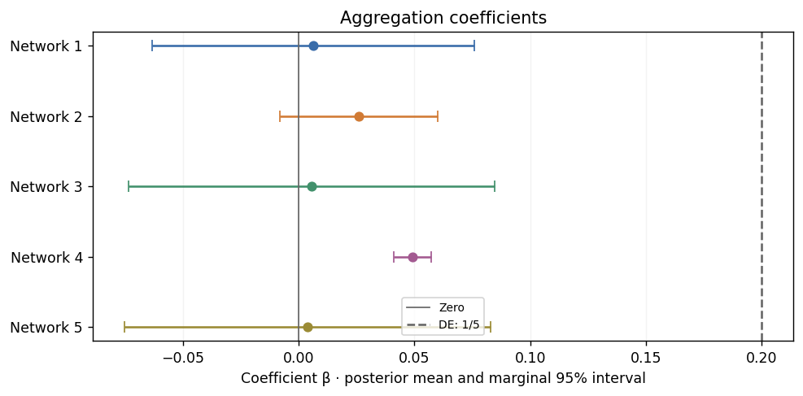
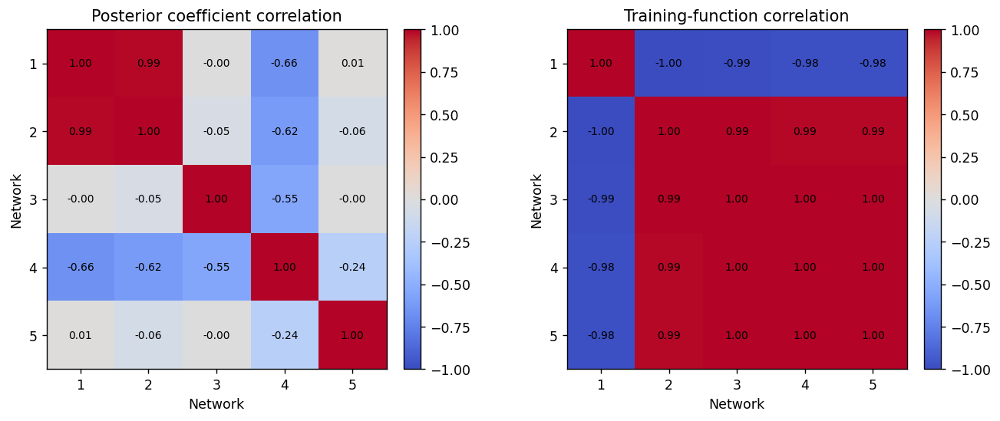
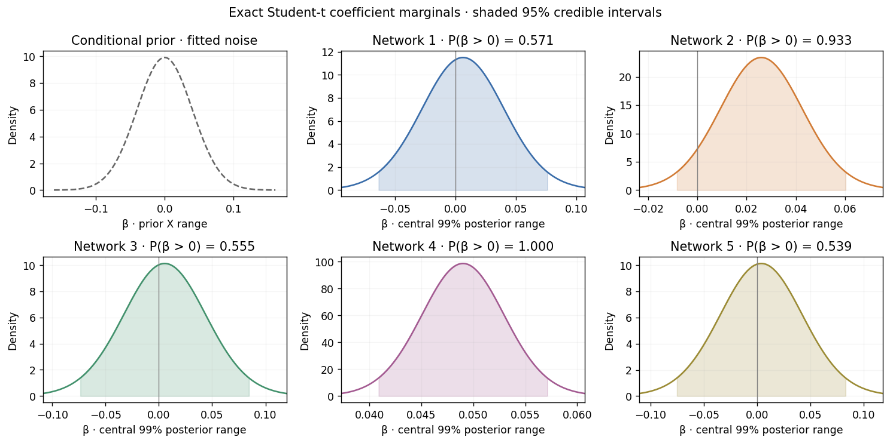
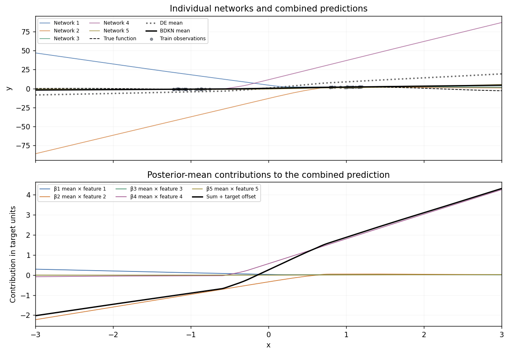
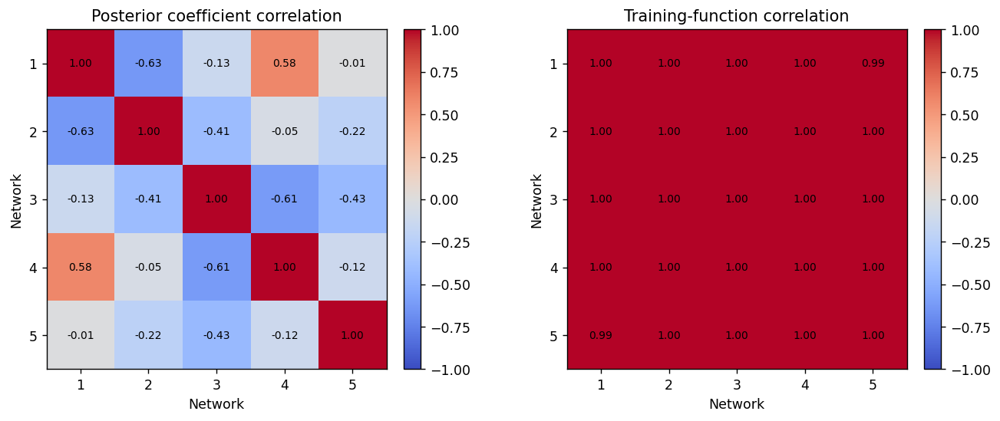
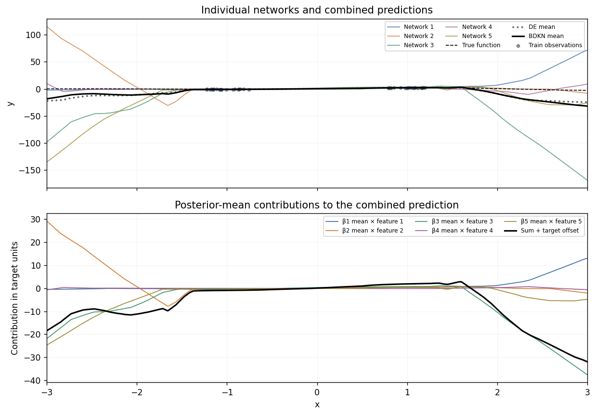
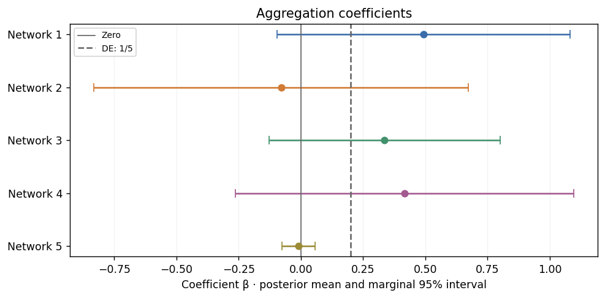
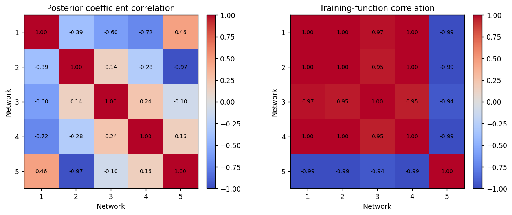
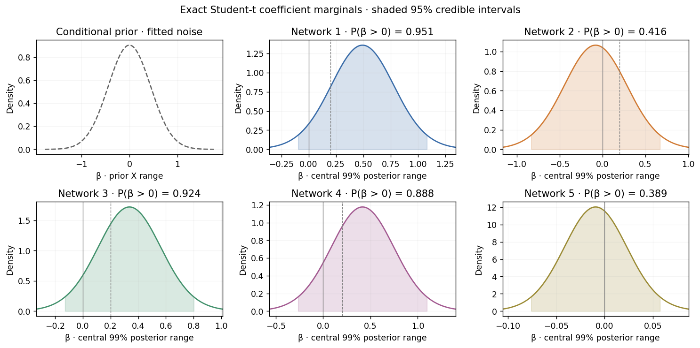
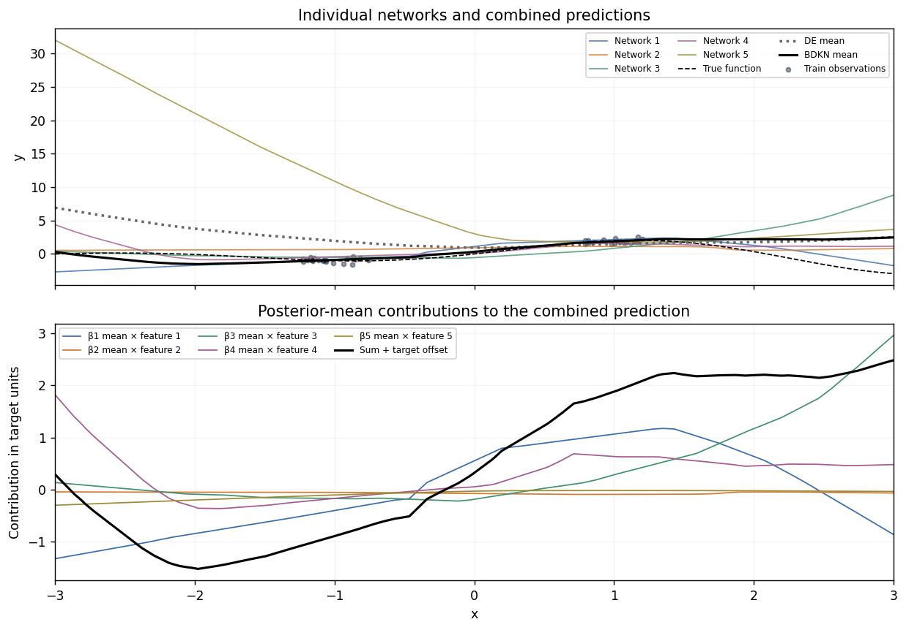

Regression comparison
Download resultsAggregation weights
\widehat y(x)=y_{\rm mean}+y_{\rm std}\sum_{h=1}^{H}\beta_h\mu_h(x)Coefficients can be negative and need not sum to one. Intervals describe coefficient uncertainty; the dashed reference is DE’s fixed 1/H weight.
BDKN


Each density panel uses its own X range for readability; coefficient intervals above share a common axis. Prior reference conditions on fitted noise. Contribution shares use held-out inputs; test targets are used only for scoring.
| Network | β mean | 95% low | 95% high | P(β > 0) | Contribution share | Test RMSE | Test NLL |
|---|---|---|---|---|---|---|---|
| 1 | 0.15914 | -0.34378 | 0.66206 | 0.73694 | 0.10339 | 1.22604 | 3.28984 |
| 2 | 0.26043 | -0.36725 | 0.88811 | 0.79665 | 0.27520 | 1.50533 | 12.03988 |
| 3 | 0.22915 | -0.27019 | 0.72850 | 0.82038 | 0.21502 | 1.32037 | 9.46759 |
| 4 | 0.05241 | -0.67124 | 0.77606 | 0.55782 | 0.00895 | 1.10368 | 1.55372 |
| 5 | 0.35756 | -0.02672 | 0.74184 | 0.96634 | 0.39743 | 1.54360 | 13.74209 |
Functional repulsion · BDKN




Each density panel uses its own X range for readability; coefficient intervals above share a common axis. Prior reference conditions on fitted noise. Contribution shares use held-out inputs; test targets are used only for scoring.
| Network | β mean | 95% low | 95% high | P(β > 0) | Contribution share | Test RMSE | Test NLL |
|---|---|---|---|---|---|---|---|
| 1 | 0.00622 | -0.06337 | 0.07582 | 0.57127 | 0.03927 | 19.49484 | 3.72916 |
| 2 | 0.02594 | -0.00825 | 0.06013 | 0.93347 | 0.31063 | 36.74759 | 5.99785 |
| 3 | 0.00547 | -0.07357 | 0.08450 | 0.55525 | 0.00399 | 1.70588 | 19.74205 |
| 4 | 0.04901 | 0.04089 | 0.05712 | 1.00000 | 0.64313 | 39.48401 | 8.54129 |
| 5 | 0.00384 | -0.07513 | 0.08281 | 0.53891 | 0.00298 | 2.49209 | 2.21628 |
Weight repulsion · BDKN




Each density panel uses its own X range for readability; coefficient intervals above share a common axis. Prior reference conditions on fitted noise. Contribution shares use held-out inputs; test targets are used only for scoring.
| Network | β mean | 95% low | 95% high | P(β > 0) | Contribution share | Test RMSE | Test NLL |
|---|---|---|---|---|---|---|---|
| 1 | 0.18287 | 0.03442 | 0.33132 | 0.99148 | 0.09252 | 16.76517 | 3.22990 |
| 2 | 0.25364 | -0.25766 | 0.76494 | 0.83896 | 0.20525 | 26.41460 | 96152.12218 |
| 3 | 0.22239 | -0.17542 | 0.62020 | 0.86737 | 0.48024 | 52.16484 | 15.78510 |
| 4 | -0.07029 | -0.51787 | 0.37728 | 0.37629 | 0.00970 | 3.25962 | 2.02367 |
| 5 | 0.18207 | -0.32314 | 0.68727 | 0.76468 | 0.21229 | 33.38614 | 21934957.13252 |
First-order repulsion · BDKN




Each density panel uses its own X range for readability; coefficient intervals above share a common axis. Prior reference conditions on fitted noise. Contribution shares use held-out inputs; test targets are used only for scoring.
| Network | β mean | 95% low | 95% high | P(β > 0) | Contribution share | Test RMSE | Test NLL |
|---|---|---|---|---|---|---|---|
| 1 | 0.49316 | -0.09612 | 1.08243 | 0.95073 | 0.39038 | 1.23748 | 16.96220 |
| 2 | -0.07935 | -0.83073 | 0.67203 | 0.41604 | 0.03451 | 1.35411 | 1.61886 |
| 3 | 0.33655 | -0.12874 | 0.80185 | 0.92420 | 0.29988 | 3.25359 | 2.39956 |
| 4 | 0.41646 | -0.26393 | 1.09684 | 0.88836 | 0.22892 | 1.47642 | 1.86801 |
| 5 | -0.00933 | -0.07594 | 0.05727 | 0.38925 | 0.04632 | 12.97051 | 5.73765 |